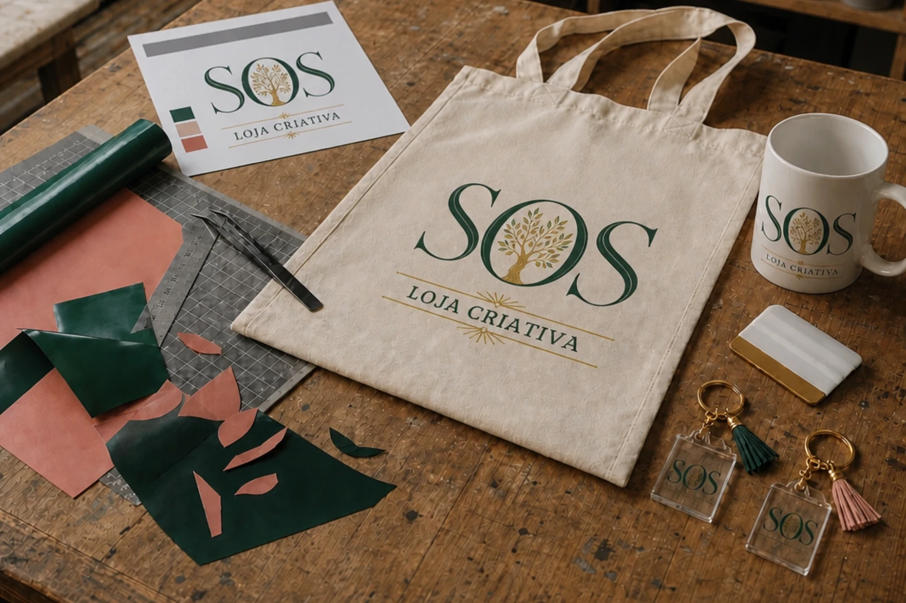
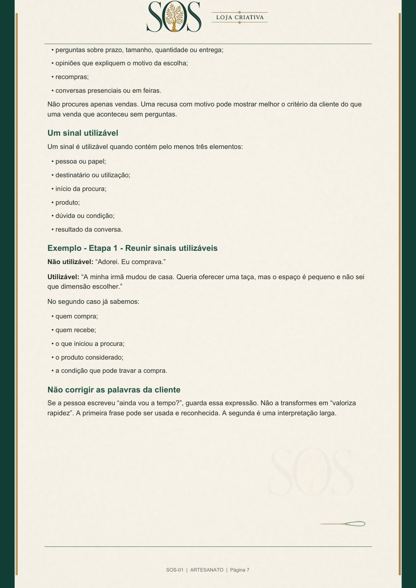
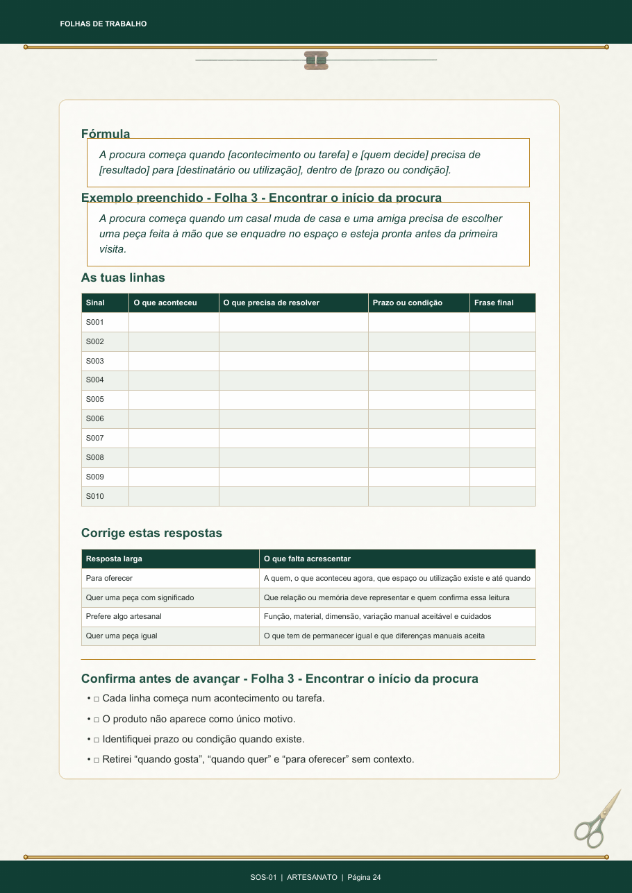

Planos SOS para lojas criativas
Descobre o que está a travar a tua loja e trabalha primeiro no ponto que está a puxar os restantes para trás.
Sem promessas de seguidores. Sem fórmulas copiadas. Sem pagar antes de saber por onde começar.
- SOS-01 Cliente e Momento de Compra
- SOS-02 Posicionamento que se Percebe
- SOS-03 Oferta Principal
- SOS-04 Preço e Valor Percebido
- SOS-05 Conteúdo e Hooks
- SOS-06 Alcance e Divulgação
- SOS-07 Prova e Confiança
- SOS-08 Caminho de Compra
- SOS-09 Fecho e Acompanhamento
- SOS-10 Ritmo e Campanhas
Quando tudo parece urgente
A tua loja não precisa de dez conselhos ao mesmo tempo.
Podes estar a publicar e não receber perguntas. Receber perguntas e perder a venda quando dizes o preço. Ter bons produtos, mas mostrar tantos que ninguém percebe por onde começar. Ou trabalhar todos os dias sem saber o que trouxe a última encomenda.
Estes problemas não se resolvem todos da mesma forma. O primeiro passo é separar o sintoma do bloqueio que o está a provocar.
Convergência SOS
Muitas fragilidades. Uma prioridade para trabalhar primeiro.
Conteúdo, preço, posicionamento, divulgação e caminho de compra podem parecer urgentes ao mesmo tempo. O Diagnóstico cruza as respostas e afunila o ruído até encontrar o ponto que está a pesar mais na loja.
Um percurso, não uma prateleira de ebooks
Primeiro descobres. Depois escolhes. Só então compras.
O Diagnóstico SOS cruza 30 respostas com o ramo principal da loja. No final, apresenta a pontuação, mostra onde existe a falha mais pesada e indica o Plano SOS adequado a esse ponto.
-
01
Respondes pelo que existe
Usas os últimos 90 dias da loja. Uma intenção ainda não aplicada não recebe a mesma pontuação de algo que já foi testado.
-
02
Recebes uma leitura
Vês a pontuação total, as áreas mais frágeis e a prioridade que merece trabalho antes das restantes.
-
03
Conheces o plano certo
Não tens de escolher entre dez títulos. O resultado liga o problema ao plano e à versão preparada para o teu ramo.
-
04
Decides sem obrigação
O diagnóstico é gratuito. Podes guardar o resultado e não comprar. Se avançares, sabes exatamente o que vais trabalhar.
Diagnóstico SOS 0-100
Trinta respostas. Uma direção para começar.
Demora apenas o tempo necessário para responder com verdade. O progresso fica guardado neste dispositivo e o resultado é calculado no final.
O mesmo problema muda de ramo para ramo
Os exemplos acompanham a realidade da loja.
Uma prova de confiança numa pastelaria criativa não é tratada como numa loja de ficheiros digitais. Um prazo de casamento não é explicado como uma reposição de materiais. O método mantém-se; as decisões, exemplos e folhas mudam.

Personalizados e presentes à medida
Quando a escolha de nomes, datas, cores ou fotografias faz parte da compra.
Os exemplos ajudam a separar quem compra de quem recebe, a recolher pedidos reais e a perceber em que ocasião a personalização passa de “bonita” a necessária.
Exemplo trabalhado: uma caneca procurada para oferecer a uma professora, com data limite, mensagem escolhida e receio de não chegar a tempo.
O que existe dentro de um Plano SOS
Não pagas por páginas. Pagas por um trabalho que começa e termina.
Cada plano fecha um problema específico. Explica o que observar, mostra como decidir, dá um exemplo preenchido e deixa folhas para aplicares a decisão à tua própria loja.


Explicação aplicada
O problema é explicado com situações de compra do ramo, não com definições soltas.
Exemplo preenchido
Vês uma decisão completa antes de teres de construir a tua.
Folhas de trabalho
Transformas perguntas, encomendas, recusas e dados da loja em matéria que consegues usar.
Confirmação final
Terminas com critérios concretos para verificar se o trabalho ficou utilizável ou se ainda está vago.
Transparência antes da compra
O plano organiza o caminho. Não trabalha no teu lugar.
O Plano SOS faz
- explica um método fechado, pela ordem certa;
- adapta as situações, escolhas e exemplos ao ramo;
- mostra um exemplo preenchido antes do exercício;
- dá critérios para reveres o que produziste;
- mantém o tema no seu lugar, sem misturar dez problemas.
O Plano SOS não faz
- não promete vendas, seguidores ou resultados rápidos;
- não inventa respostas que só existem dentro da tua loja;
- não substitui fotografias, registos, decisões ou testes reais;
- não entrega frases iguais para todas copiarem;
- não é consultoria individual nem execução feita por nós.
A tua parte
Vais procurar sinais reais dos últimos 90 dias, preencher as folhas com o teu produto, tomar decisões, aplicar uma alteração e registar o que aconteceu. É esse trabalho que transforma o PDF num instrumento da loja.
Dez problemas separados para não repetir matéria
O resultado indica apenas o plano que faz sentido agora.
Não precisas de comprar a coleção completa. Cada plano funciona sozinho e trata uma área diferente.
- SOS-01Cliente e Momento de CompraQuem compra, quem recebe e o que inicia a procura.
- SOS-02Posicionamento que se PercebeO que a loja precisa de deixar claro em poucos segundos.
- SOS-03Oferta PrincipalO que merece prioridade e por onde a cliente deve começar.
- SOS-04Preço e Valor PercebidoComo sustentar o preço com condições, escolha e valor visível.
- SOS-05Conteúdo e HooksComo transformar produto, situação e prova em conteúdo reconhecível.
- SOS-06Alcance e DivulgaçãoComo chegar a pessoas novas com uma oferta que se entende.
- SOS-07Prova e ConfiançaO que mostrar para reduzir dúvida antes da compra.
- SOS-08Caminho de CompraComo retirar perguntas desnecessárias e tornar a encomenda clara.
- SOS-09Fecho e AcompanhamentoComo fazer a conversa avançar sem pressão e sem abandono.
- SOS-10Ritmo e CampanhasComo ligar produtos, conteúdos, datas e capacidade real.
Um preço igual para uma recomendação honesta
14,90 € por Plano SOS, na versão do teu ramo.
Todos os temas têm o mesmo preço. Assim, o Diagnóstico pode recomendar aquilo de que a loja precisa, sem empurrar a opção mais cara.
O valor não foi escolhido para parecer barato nem para criar a ideia de produto “premium” apenas pelo preço. Corresponde a um problema fechado, um método aplicado, exemplos, folhas de trabalho e uma direção final.
Plano individual
14,90 €
Um tema, uma versão por ramo e o trabalho completo desse problema.
Descobrir o meu plano O diagnóstico é gratuito e não obriga a comprar.Se começares por um plano e depois avançares para um pack que o inclui, o valor já pago é descontado.
Antes de começares
Perguntas que merecem resposta clara.
É um ebook para ler e guardar?
Não. Tem explicação, mas foi construído para ser trabalhado. Lês uma parte, aplicas à tua loja, completas as folhas e confirmas o resultado antes de avançar.
Tenho de comprar os dez planos?
Não. O Diagnóstico identifica a prioridade e recomenda um plano. Podes comprar apenas esse, trabalhar e voltar a avaliar a loja mais tarde.
Recebo publicações, frases ou respostas prontas?
Recebes estruturas, critérios e exemplos preenchidos. Não seria honesto entregar a mesma frase a lojas com produtos, clientes, prazos e formas de venda diferentes.
Como sei se os exemplos servem para a minha loja?
Existem versões próprias para Personalizados, Artesanato, Moda, Papelaria, Eventos, Pastelaria e Materiais. O ramo é escolhido antes das 30 perguntas.
O diagnóstico garante que vou vender mais?
Não. Mostra onde a estrutura está fraca e dá uma direção fundamentada. As vendas dependem do produto, da procura, da execução e das decisões que tomares depois.
Posso fazer o diagnóstico e não comprar?
Sim. O resultado é teu. A compra existe para quem quiser seguir a direção com um método já organizado e aplicado ao seu ramo.
Começar com verdade
Não tentes reparar a loja toda hoje.
Descobre primeiro qual é o trabalho que merece a tua atenção.
Fazer o Diagnóstico SOS